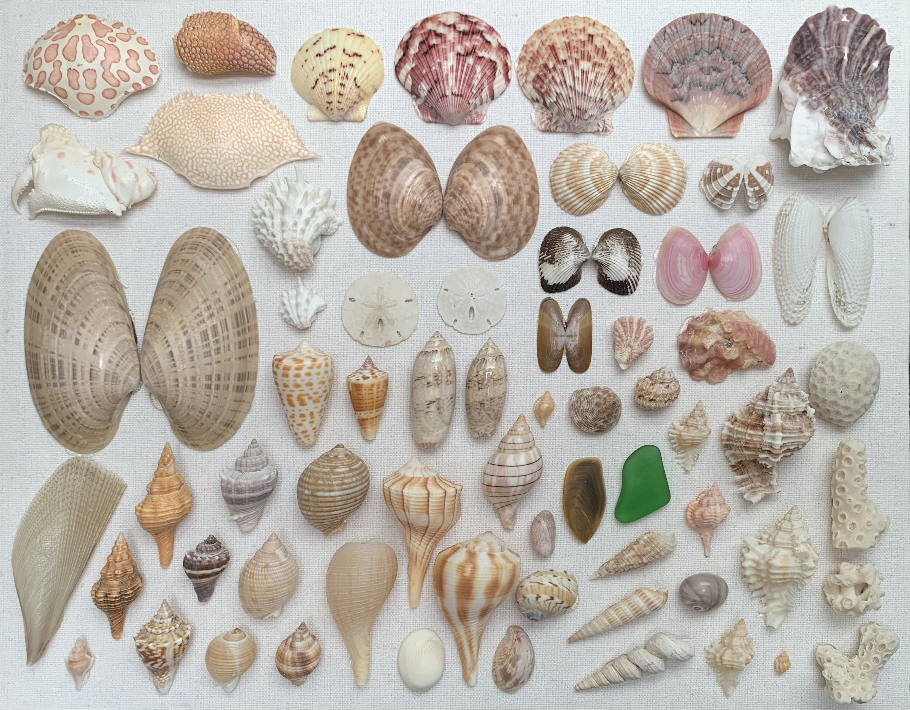

Shells Part 1

Atlantic Giant Cockle
- One of the largest shallow-water bivalves found in the Gulf of Mexico, reaching about 125 mm (6 inches). It is one among eight species of the family Cardiidae present along the shores of Southwest Florida. Its shell is characterized by smooth, rounded radial ribs, usually numbering between 30 and 40 in adult individuals. As it often happens with other species of the family Cardiidae, Atlantic Giant Cockles use their muscular feet to leap away, in pole-vault fashion, from attacking predators.
- Dinocardium robustum
Cross-barred Venus
- The cloudy white to yellow-white shells are highly distinctive, with raised, bladelike concentric ridges superimposed on strong radial ribs and giving the shells their characteristic cancellate (crisscrossed) appearance. There is some debate about speciation between the Florida & Caribbean variants.
- Chione cancellata
Angel Wing Clam
- Cyrtopleura costata, commonly known as the angel wing clam, is a bivalve mollusk recognized for its fragile, elongated shell with radial ribs and growth rings. Found along the western Atlantic coast, it burrows in sandy or muddy seabeds, where it uses its shell to filter feed and is valued as a food source in parts of the Caribbean.
- Cyrtopleura costata
Calico Scallop
- Calico scallops, smaller than their Atlantic bay counterparts, are common on sandy or grassy bottoms in subtropical waters. They mature quickly and spawn year-round, making them a commercially valuable species.
- Argopecten gibbus
Calico Scallop
- Calico scallops, smaller than their Atlantic bay counterparts, are common on sandy or grassy bottoms in subtropical waters. They mature quickly and spawn year-round, making them a commercially valuable species.
- Argopecten gibbus
Calico Scallop
- Calico scallops, smaller than their Atlantic bay counterparts, are common on sandy or grassy bottoms in subtropical waters. They mature quickly and spawn year-round, making them a commercially valuable species.
- Argopecten gibbus
Zigzag Scallop
- A bivalve mollusk known for its distinctive zigzag-patterned shell. It inhabits shallow Atlantic and Caribbean waters, filtering plankton and demonstrating a unique movement pattern using rapid shell clapping. Its shell is circular, and the two half-shells, or valves, are strongly dissimilar, with the lower valve strongly concave, and the upper valve flatter, slightly convex.
- Euvola ziczac
Keyhole Sand Dollar
- A flattened urchin species found along the Atlantic and Gulf Coasts. They burrow into the sand and filter feed from the water. While alive they have a brown velvet-like skin.
- Mellita isometra
Keyhole Sand Dollar
- A flattened urchin species found along the Atlantic and Gulf Coasts. They burrow into the sand and filter feed from the water. While alive they have a brown velvet-like skin.
- Mellita isometra
Lettered Olive
- Predatory sea snails with smooth, glossy shells often in muted colors, found in subtropical and tropical seas worldwide. Known for rapid burrowing, they feed on bivalves and carrion and are popular in jewelry and shell collections.
- Argopecten gibbus
Lightning Whelk
- The lightning whelk is known for its unique left-spiraling shell and predatory behavior, using its shell as leverage to pry open bivalves like clams and oysters, which it then consumes using its proboscis. Found along the Gulf of Mexico and Atlantic coasts, lightning whelks are notable for their distinct egg-laying process, where females produce long strings of capsules that can contain thousands of eggs.
- Sinistrofulgur perversum
Pear Whelk
- A Gulf of Mexico native, has a smooth, conical shell with muted coloring that camouflages well in its sandy or muddy habitat. Unlike the lightning whelk, the pear whelk tends to prefer a diet of small invertebrates and is adapted to both intertidal and subtidal zones.
- Busycotypus spiratus
Atlantic Fig (Paper Fig)
- Distinguished by its delicate, thin shell, which is often found washed ashore in the southeastern U.S. Its shell is highly prized by collectors, and the snail itself is typically found burrowing in sandy environments, where it uses its muscular foot for movement and foraging.
- Ficus papyratia
Top Snail
- A small marine snail native to the Gulf of Mexico, notable for its reddish-brown shell with gray and white streaks. Measuring up to 25 mm, its shell features a distinctive pointed spire and fine spiral grooves, and it can often be found in shallow coastal waters adhering to hard surfaces.
- Calliostoma tampaense
Purplish Tagelus
- Common bivalve identified by a brown outer color with a purple interior. Known for having elongate shells - almost 3x as long as they are wide.
- Tagelus divisus
Kitten's Paw
- Often found complete as a paired valve set, the pleats give the shell resistance against crushing and opening.
- Plicatula gibbosa
Florida Cone
- Native to the Gulf of Mexico and Florida waters, is known for its cream-colored shell with distinctive reddish-brown bands and spots. This venomous, carnivorous species uses a harpoon-like tooth to immobilize prey like marine worms, and during its breeding season, it exhibits communal spawning behavior in shallow, sandy environments, particularly around islands such as Marco Island and the Ten Thousand Islands National Wildlife Refuge.
- Conus anabathrum
Alphabet Cone
- Species of cone snail found primarily in Florida and the Caribbean, known for the unique, letter-like markings on its shell, which give it its name. Venomous, though its toxicity is not typically lethal, especially compared to more dangerous cone snail species found elsewhere.
- Conus spurius
Sawtooth Pen Shell (Juvenile)
- The pen shell has two thin-walled, fan-shaped shells and is one of the largest bivalves in the world, reaching lengths up to 10 inches (250 millimeters). In Florida, they are common in shallow waters near seagrass beds and are usually found buried in the sand with only the upper portion of the shell exposed.
- Atrina serrata
Florida Spiny Jewelbox
- A small, thick-shelled bivalve commonly found along the coasts from North Carolina to Florida and Texas. Its distinctive shell, typically white with occasional pink or red tinges, features rows of tubular spines that help protect it from predators.
- Arcinella cornuta
Florida Spiny Jewelbox
- A small, thick-shelled bivalve commonly found along the coasts from North Carolina to Florida and Texas. Its distinctive shell, typically white with occasional pink or red tinges, features rows of tubular spines that help protect it from predators.
- Arcinella cornuta
Florida Crown Conch
- Recognized for its striking spiked shell, the crown conch is a predatory sea snail found along the Gulf of Mexico, especially in shallow coastal waters around oyster reefs, mudflats, and salt marshes.
- Melongena corona
Florida Crown Conch
- Recognized for its striking spiked shell, the crown conch is a predatory sea snail found along the Gulf of Mexico, especially in shallow coastal waters around oyster reefs, mudflats, and salt marshes.
- Melongena corona
Scotch Bonnet
- A carnivorous marine snail known for its striking, checkered shell that can reach up to 10 cm in length. Found in shallow waters along the Atlantic coast from Florida to North Carolina, this species feeds mainly on echinoderms like sand dollars and sea urchins, using sulfuric acid to drill into their hard surfaces. Its distinctive appearance has made it a popular collector's item, and it's even North Carolina’s state shell, a nod to the state’s Scottish heritage (also the first state shell).
- Semicassis granulata
Nutmeg
- A medium-sized marine snail known for its attractively textured shell, which reaches up to 2 inches in height. Its shell is typically white, pale yellow, or orange with orange-brown bands and features a lattice-like pattern created by pronounced spiral cords and axial ribs. This species, found along the western Atlantic from North Carolina to Brazil, inhabits sandy, shallow coastal waters, where it likely consumes soft-bodied organisms.
- Cancellaria reticulata
Giant Tun (Juvenile)
- A large sea snail with a globular, thin-walled shell that reaches sizes of up to 23 centimeters. This carnivorous species uses its proboscis to envelop prey like sea cucumbers and sea urchins, injecting acidic saliva to immobilize them, and it is found primarily in warm waters of the Atlantic and Mediterranean.
- Tonna galea
Banded Tun
- A smaller tun species with similar habitats and feeding habits to the giant tun, but it has more distinct ridges along its shell, giving it a unique ribbed appearance. This snail also inhabits tropical and subtropical regions, typically favoring sandy or rocky areas at moderate depths.
- Tonna sulcosa
Western Striate Bubble
- A fragile bubble snail found in warm, shallow waters of the western Atlantic. Known for burrowing in sandy-mud substrates, this snail is a nocturnal feeder that consumes detritus and occasionally small mollusks. When threatened, it can retract completely into its shell, though it typically envelops the shell with its soft, translucent body during movement.
- Bulla occidentalis
Sharp Ribbed Drill
- A small predatory sea snail found in the Gulf of Mexico and the Caribbean Sea. This species, part of the Muricidae family, typically grows up to 30 mm and has a distinctive, thick shell with prominent, sharp ribs that alternate around the shell’s spiral. It preys on other mollusks, drilling into their shells with a specialized radula to access the soft tissue inside.
- Eupleura sulcidentata
Florida Horse Conch
- The Florida horse conch, Florida’s state shell, is one of the largest marine snails in the Gulf of Mexico and Atlantic Ocean, with shells reaching up to two feet long. Known for its bright orange soft body, this carnivorous predator preys on other mollusks, including tulip snails and whelks, by enveloping them with its powerful foot.
- Triplofusus giganteus
Florida Horse Conch
- The Florida horse conch, Florida’s state shell, is one of the largest marine snails in the Gulf of Mexico and Atlantic Ocean, with shells reaching up to two feet long. Known for its bright orange soft body, this carnivorous predator preys on other mollusks, including tulip snails and whelks, by enveloping them with its powerful foot.
- Triplofusus giganteus
Florida Fighting Conch
- A medium-sized, sturdy marine snail, known for its characteristic spiral shell and vibrant coloration ranging from orange to mahogany with distinct banding. It inhabits the shallow waters of the Gulf of Mexico and along the Florida coastline, where it feeds on algae and detritus, while its thick shell provides protection from predators like crabs and fish.
- Strombus alatus
Spotted Slipper (Boat Shell)
- A common filter-feeding marine gastropod native to the Atlantic, often found along the U.S. East Coast and in European waters as an introduced species. These snails are notable for their unique "stacking" behavior, where they form clusters with older females at the base and younger males on top, gradually changing sex as they grow older; this arrangement allows them to remain in close proximity for reproduction while feeding on plankton and detritus filtered from the water around them.
- Crepidula fornicata
Operculum (Unidentified Species)
- A corneous or calcareous anatomical structure like a trapdoor that exists in many (but not all) groups of sea snails and freshwater snails.
Operculum (Unidentified Whelk)
- A corneous or calcareous anatomical structure like a trapdoor that exists in many (but not all) groups of sea snails and freshwater snails.
Seaglass
- Glass weathered by gradual abrasian against sand on a beach.
Shark Eye
- The most common Moon Snail in Southwest Florida is called the Shark Eye. Shark Eyes are a grey-pink color, and their round shape resembles an eyeball. When seen alive, the snail has a large beige foot and brown, soft operculum which covers the aperture when the mollusk takes shelter inside its shell.
- Neverita duplicata
Gaudy Nautica (Tiger Eye)
- Similar to the shark eye, they are a moon shell with a brown zig zag pattern. Alice they have a beige foot with red pin stripes - they are notable for their unique ability to be a “right-handed” or “left-handed” shell.
- Naticarius canrena
Apple Murex
- Found in tropical and subtropical waters, is known for its robust, thick shell decorated with spiral ridges and dark brown blotches on its outer lip. This species often resides in shallow coastal areas among rocks and seagrass.
- Phyllonotus pomum
Lace Murex
- Common in Florida, has a lacy, fragile shell with intricate spines, providing camouflage and protection against predators. It often inhabits sandy or muddy substrates and preys on other mollusks.
- Chicoreus florifer
Lace Murex
- Common in Florida, has a lacy, fragile shell with intricate spines, providing camouflage and protection against predators. It often inhabits sandy or muddy substrates and preys on other mollusks.
- Chicoreus florifer
Lace Murex
- Common in Florida, has a lacy, fragile shell with intricate spines, providing camouflage and protection against predators. It often inhabits sandy or muddy substrates and preys on other mollusks.
- Chicoreus florifer
Rose Murex
- Named for its delicate pink hue, is a beautiful shell with thorny spines, giving it a unique appearance. It is typically found in sandy, coral, or rubble environments, where it feeds on smaller snails and mollusks.
- Vokesimurex rubidus
Starlet Coral
- Also known as "round starlet" or "smooth starlet," is a light gray to golden brown coral covered with pitted round corallites. The characteristic depressed corallites range in size from 0.1 to 0.75 inches (3 to 20 mm) and give this coral a smooth appearance. This species grows to a large boulder or dome shape. Younger colonies are smaller and encrusting. Colony diameter generally ranges from 1 to 6 feet.
- Siderastrea siderea
Staghorn Coral
- A large, fast-growing species primarily inhabiting the deeper Caribbean and western Atlantic reefs. Known for its antler-like branches, this coral plays a crucial role in reef-building and biodiversity. (Possibly Clubbed Finger Coral)
- Acropora cervicornis
Ivory Bush Coral
- A branching coral found in the shallow coastal waters of the eastern Atlantic, Gulf of Mexico, and Caribbean. It forms small, dense colonies with branches that have a yellow-brown color and can withstand significant sediment, often serving as habitats for other marine life.
- Oculina diffusa
Staghorn Coral
- A large, fast-growing species primarily inhabiting the deeper Caribbean and western Atlantic reefs. Known for its antler-like branches, this coral plays a crucial role in reef-building and biodiversity.
- Acropora cervicornis
Sunray Venus
- A native clam species found from North Carolina to Brazil, is distinguished by its long, smooth shell with sunburst-like radial bands in shades of salmon, tan, and gray. This species is highly prized both for its aesthetic value in shell collections and as a delicacy, especially in Florida where it is also farmed.
- Macrocallista nimbosa
Calico Clam
- Clam species found primarily in sandy marine environments, including the Gulf of Mexico and Caribbean Sea. This clam features an ovate shell that can reach up to 7 cm in size, characterized by a glossy surface and tan color adorned with irregular brown markings.
- Macrocallista maculata
Ponderous Ark
- Very common clam species known for its dark-brown or black periostracum - the organic layer covering the shell. It is commonly associated with the false sea fan which attaches itself to the posterior region of the shell.
- Noetia ponderosa
Rose Petal Tellin
- A small bivalve mollusk found in sandy substrates along the Gulf of Mexico and the Caribbean, typically measuring up to 38 mm in size. Characterized by its glossy, opalescent shell that often features rosy or white tones with concentric growth lines, this clam is a deposit feeder, using its long siphons to collect organic detritus from the sediment.
- Eurytellina lineata
Calico Crab Carapace
- A shallow water crab native to the western Atlantic. It can be see carrying an anemone on its back, or buried in the sand with only its eyes exposed.
- Hepatus epheliticus
Flamed Box Crab Claw
- Found on sandy bottoms or over coral reefs around the Western Atlantic and Gulf of Mexico. They are shame-faced box crabs because of the way they tuck their legs in and hide behind their claws in defensive position as if in shame or as a box.
- Calappa flammea
Giant Red Hermit Crab Claw
- Largest hermit crab species in the Western Atlantic, it has a hairy red body with massive lobster-like claws.
- Petrochirus diogenes
Speckled Swimming Crab Carapace
- Very similar in shape and behavior to the Atlantic blue crab, they are distributed along the Western Atlantic. When not swimming they burrow in the sand to ambush small fish, mollusks, and other crustaceons.
- Arenaeus cribrarius